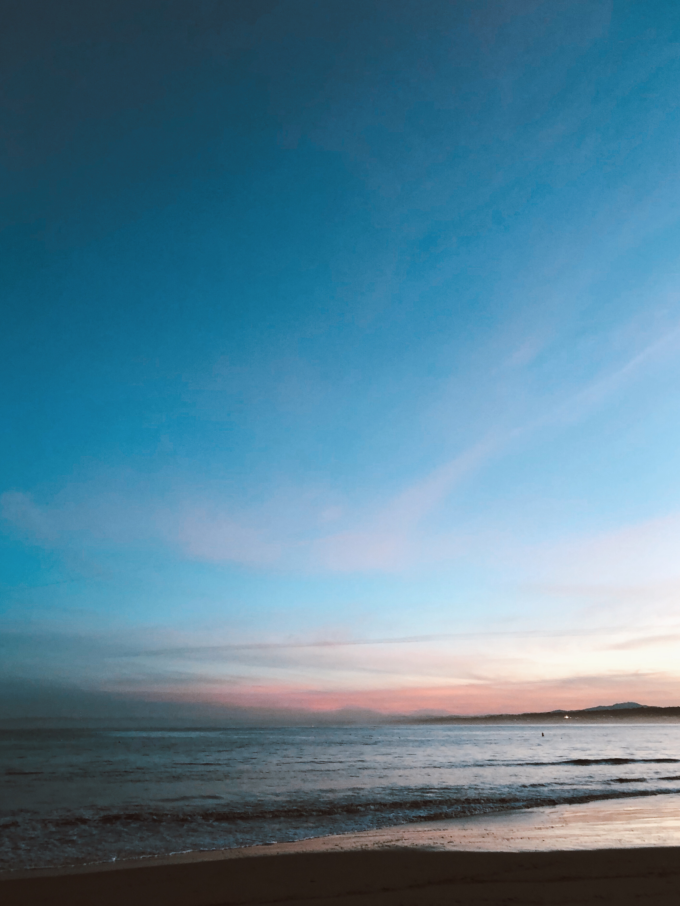
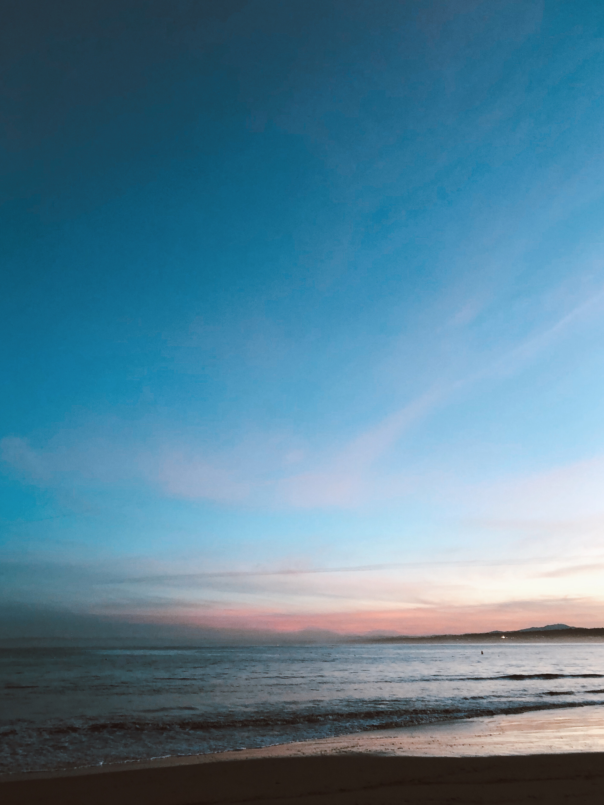

One journey, many turns


Ever since I was young I had loved to create. I would take plain things around my house and turn it into something completely new like using gift tissue paper to create animals or nail polish to paint artwork. My passion for art has always been an outlet for my creativity and it was even more of a joy to give to others.
Fast forward to college, I double-majored in dance, because of my deep-rooted passion for it, and criminology, which fascinated my analytical side. I had the best of both worlds yet post-college was really daunting since neither routes allowed me to explore both to the fullest.
When I first learned about UI/UX I was amazed at how I was actually already surrounded by it. Throughout my life I had always saw opportunities to optimize the things I used digitally and tangibly. As I learned more about what it meant to be a designer, I naturally became more curious and started asking "why?" often.
Soon after, I desired to become a designer who would create accessible interfaces and bridge the gap between people and technology.
I enrolled in a design program that helped me understand the thoughtful approach to understanding user frustrations and crafting interfaces that addresses those needs. As an artist and researcher, creating seamless user experiences for people keeps me enthusiastic. Design can empower people and seeing this in action is so rewarding to me.
 



Besides design, I have a love for photography, dance, and Christ. In my free time, I also enjoy exploring new places (including new places to eat)!